Whiteboard wiping
Misgrasping · residual ink · sticking · missed release
Anonymous research project · September 2026
Behind the fingertip
From preparation to coating: fifteen selected steps in the specified operation order. Each clip is retimed to ten seconds; the speed label refers to its original footage.
Fabrication storyboard step 01; retimed 1.5× from the source segment. Visual process preview, not a real-time record.
Fabrication storyboard step 02; retimed 5.4× from the source segment. Visual process preview, not a real-time record.
Fabrication storyboard step 03; retimed 5.8× from the source segment. Visual process preview, not a real-time record.
Fabrication storyboard step 04; retimed 4.23333× from the source segment. Visual process preview, not a real-time record.
Fabrication storyboard step 05; retimed 8.13× from the source segment. Visual process preview, not a real-time record.
Fabrication storyboard step 06; retimed 5.9× from the source segment. Visual process preview, not a real-time record.
Fabrication storyboard step 07; retimed 2.7× from the source segment. Visual process preview, not a real-time record.
Fabrication storyboard step 08; retimed 1.3× from the source segment. Visual process preview, not a real-time record.
Fabrication storyboard step 09; retimed 2× from the source segment. Visual process preview, not a real-time record.
Fabrication storyboard step 10; retimed 5.1× from the source segment. Visual process preview, not a real-time record.
Fabrication storyboard step 11; retimed 9.7× from the source segment. Visual process preview, not a real-time record.
Fabrication storyboard step 12; retimed 3.8× from the source segment. Visual process preview, not a real-time record.
Fabrication storyboard step 13; retimed 4.5× from the source segment. Visual process preview, not a real-time record.
Fabrication storyboard step 14; retimed 8× from the source segment. Visual process preview, not a real-time record.
Fabrication storyboard step 15; retimed 7.16× from the source segment. Visual process preview, not a real-time record.
Additional painting segment, retimed from 33 s to 10 s; not part of the numbered storyboard.
Optical response during the recorded loading sequence.
Qualitative optical response in a cropped tactile ROI. This footage is not a force or pressure calibration.
Qualitative optical response from a cropped camera ROI. This video is not a force calibration, and no force, pressure or response-time measurement is inferred from it. Color changes are not reconstructed physical height, depth or pressure.
Contact appearance
Individual object photographs paired with their recorded tactile images.
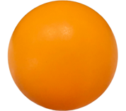
Raw tactile image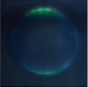
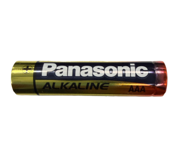
Raw tactile image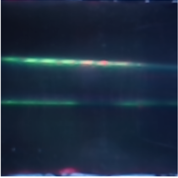
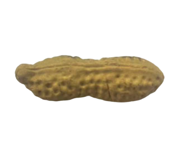
Raw tactile image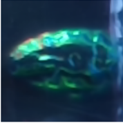
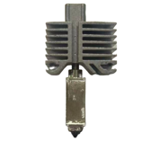
Raw tactile image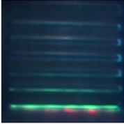
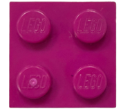
Raw tactile image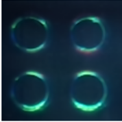
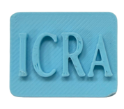
Raw tactile image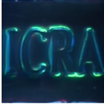
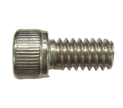
Raw tactile image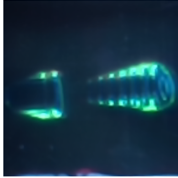
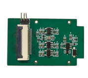
Raw tactile image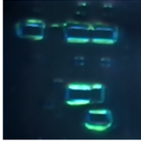
Individual images extracted from the latest locally available source figure, without manuscript panel letters. Tactile images show optical appearance, not calibrated depth, force or pressure.
See it in action
Global and wrist views alongside the tactile ROI selected for close-up inspection.
Whiteboard recording 341–359 s; three camera views composited for qualitative inspection, not camera-sync or task-success evidence. Tactile panel only: cropped to source pixels x=120..219, y=182..301; aspect-preserving fit with black side bars. Global and wrist panels are uncropped.
PC self episode 000; three episode-aligned camera exports. Qualitative deployment footage only; exposure synchronization and outcome are not inferred. Tactile panel only: cropped to source pixels x=120..219, y=182..301; aspect-preserving fit with black side bars. Global and wrist panels are uncropped.
PC perturbed episode 033; label inherited from source export. Qualitative footage only; per-episode perturbation, exposure synchronization, and outcome are not independently verified. Tactile panel only: cropped to source pixels x=120..219, y=182..301; aspect-preserving fit with black side bars. Global and wrist panels are uncropped.
Views are paired by the available episode records or shared source interval. This presentation does not establish hardware exposure synchronization or measured control latency. Selected clips are qualitative examples, not additional evaluation trials.
Whiteboard recording 111–126 s; qualitative three-view preview only, with no sync or outcome claim. Tactile panel only: cropped to source pixels x=120..219, y=182..301; aspect-preserving fit with black side bars. Global and wrist panels are uncropped.
Successes / 30 trials per task. Missing entries are not estimated or treated as zero.
| Policy / tactile input | Whiteboard Wiping | Test-Tube Insertion | Perturbed Test-Tube Insertion | Overall |
|---|---|---|---|---|
| Vision-only | 19/30 (63.3%) | 9/30 (30.0%) | 1/30 (3.3%) | 29/90 (32.2%) |
| Marker-based Wedge RGB | 23/30 (76.7%) | 21/30 (70.0%) | 13/30 (43.3%) | 57/90 (63.3%) |
| Marker-based Wedge depth | 20/30 (66.7%) | 18/30 (60.0%) | 15/30 (50.0%) | 53/90 (58.9%) |
| Marker-based Wedge normal | 21/30 (70.0%) | 20/30 (66.7%) | 14/30 (46.7%) | 55/90 (61.1%) |
| Marker-based Wedge marker | 22/30 (73.3%) | Not reported | Not reported | Incomplete |
| PCTac RGB | 22/30 (73.3%) | 25/30 (83.3%) | 13/30 (43.3%) | 60/90 (66.7%) |
| PCTac Hue | 24/30 (80.0%) | 28/30 (93.3%) | 16/30 (53.3%) | 68/90 (75.6%) |
These descriptive counts are not a significance test. Episode-level records, training-seed variation and confidence intervals were not independently re-audited for this website update. Marker-based Wedge is a research baseline, not a commercial product claim. No force-calibration, inference-latency or slip-response advantage is inferred.
Failure modes remain part of the record, alongside selected demonstrations.
Misgrasping · residual ink · sticking · missed release
Misgrasping · slipping · wedging · misinsertion
Misgrasping · stalling · sticking · overstretching
These categories summarize the previously reported examples. The selected videos above are not a complete failure audit, and no new success or failure counts are assigned from them.
PCTac observes a continuous structural-color field at a photonic-crystal fingertip. Contact-induced appearance changes are represented as reference-relative circular Hue, without interpreting them as calibrated force or pressure. Tactile observations, external RGB views and robot state are combined in a robot-learning system.
The fingertip combines a photonic-crystal contact layer, internal white illumination and a folded optical path. One fingertip carries the sensor; the opposing contact surface is passive.
Website visuals use standalone CAD, project footage and individual object images from the verified figure source. No complete manuscript composite figures are displayed or bundled. Raw episodes, model weights, local configurations and the full manuscript are not included. No stock footage or synthetic performance results.
Videos are lightweight presentation derivatives; original recordings remain unchanged. Retimed clips are labeled. Later re-recordings are not substituted for native rollout views.